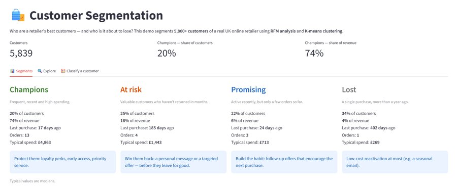
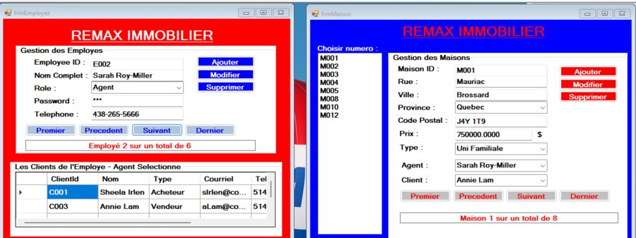
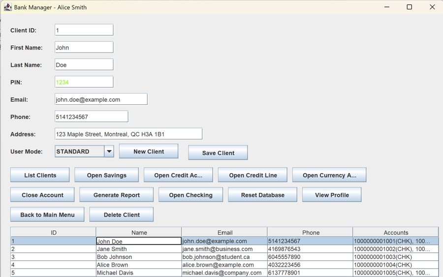

Isabelle D. Easton
J'ai géré un commerce de mode pendant des années. Aujourd'hui, je développe des logiciels et j'utilise l'apprentissage automatique pour répondre aux questions que je me posais en boutique.
I ran a fashion retail business for years. Today I build software and use machine learning to answer the questions I used to ask in the store.
Étudiante en programmation au Collège LaSalle, à Montréal. Je cherche un stage à l'été 2027 (mai à août) en développement logiciel ou en données.
Programming student at Collège LaSalle in Montréal. I'm looking for a summer 2027 internship (May to August) in software development or data.
ProjetsProjects
Chaque projet a sa page : le problème, mes choix techniques, les résultats et ce que j'en ai appris.
Each project has its own page: the problem, my technical choices, the results and what I learned.

Segmentation de clientèleCustomer Segmentation
Analyse RFM et K-means sur les ventes réelles d'un détaillant en ligne, interprétées avec mon expérience du commerce de détail.
RFM analysis and K-means on a real online retailer's sales, interpreted through my retail experience.
-

Étude de casCase studyRemaxImmoRemaxImmo
Une application de gestion immobilière où chaque agent ne voit que ses propres clients et leurs maisons.
A real estate management app where each agent only sees their own clients and their houses.
-
 Étude de casCase study
Étude de casCase studyAnnuaire BSTBST Phone Book99/100
Un annuaire téléphonique bâti sur un arbre binaire de recherche, comparé à une structure hybride.
A phone book built on a binary search tree, benchmarked against a hybrid structure.
-

Étude de casCase studySystème bancaireBank System
Un système bancaire complet, construit deux fois : avec des fichiers, puis avec une base Oracle.
A complete banking system, built twice: with files, then with an Oracle database.
-
 Étude de casCase study
Étude de casCase studyConvertisseur de devisesCurrency Converter
Mon bureau de change en C# de 2e session, réécrit pour le web avec des taux en temps réel.
My 2nd-term C# currency exchange app, rewritten for the web with live rates.
Aussi : la spécialisation Machine Learning d'Andrew Ng (certificat, travaux pratiques) et Musical Drums, un jeu de mémoire en JavaScript.
Also: Andrew Ng's Machine Learning Specialization (certificate, labs) and Musical Drums, a JavaScript memory game.
ParcoursBackground
Mon expérience en commerce me sert tous les jours en programmation : comprendre le besoin réel avant de coder.
My retail experience helps me every day in programming: understanding the real need before writing code.
- 2008 – 2023
Gestion en commerce de détail, MauriceRetail management, Mauritius
Direction d'équipes de 8 à 12 personnes et croissance des ventes d'année en année. Collaboration au développement d'une boutique en ligne WooCommerce, mon premier contact avec le code.
Led teams of 8 to 12 people and grew sales year over year. Collaborated on building a WooCommerce online store, my first contact with code.
- 2023
Premiers pas en développement webFirst steps in web development
Certification Responsive Web Design de freeCodeCamp (environ 300 heures).
freeCodeCamp Responsive Web Design certification (about 300 hours).
- 2024 – aujourd'hui2024 – today
DEC en programmation, Collège LaSalleProgramming diploma (DEC), Collège LaSalle
C#, Java, Python, PHP, bases de données Oracle et SQL Server, structures de données et développement mobile (Swift, Kotlin).
C#, Java, Python, PHP, Oracle and SQL Server databases, data structures and mobile development (Swift, Kotlin).
- 2026
Spécialisation Machine LearningMachine Learning Specialization
Les trois cours d'Andrew Ng (DeepLearning.AI et Stanford), puis mon premier projet IA personnel.
Andrew Ng's three courses (DeepLearning.AI and Stanford), followed by my first personal AI project.
- Été 2027Summer 2027
Mon prochain pas : un stageMy next step: an internship
Disponible de mai à août 2027, en français ou en anglais.
Available from May to August 2027, in French or English.
CompétencesSkills
Les technologies que j'ai utilisées dans des projets concrets.
The technologies I've used in real projects.
LangagesLanguages
- C#
- Java
- Python
- JavaScript, HTML, CSS
- PHP
- SQL, PL/SQL
Données et MLData and ML
- pandas, NumPy
- scikit-learn
- K-means, analyse RFMRFM analysis
- Jupyter, Streamlit
Bases de donnéesDatabases
- SQL Server
- Oracle
- MySQL
Outils et méthodesTools and methods
- .NET, Windows Forms
- Git, GitHub
- POO, structures de donnéesOOP, data structures
- Agile, Scrum, UML
Contact
Vous cherchez une stagiaire pour l'été 2027 ? Écrivez-moi, je réponds rapidement.
Looking for an intern for summer 2027? Write to me, I reply quickly.
dorisaeaston@gmail.com